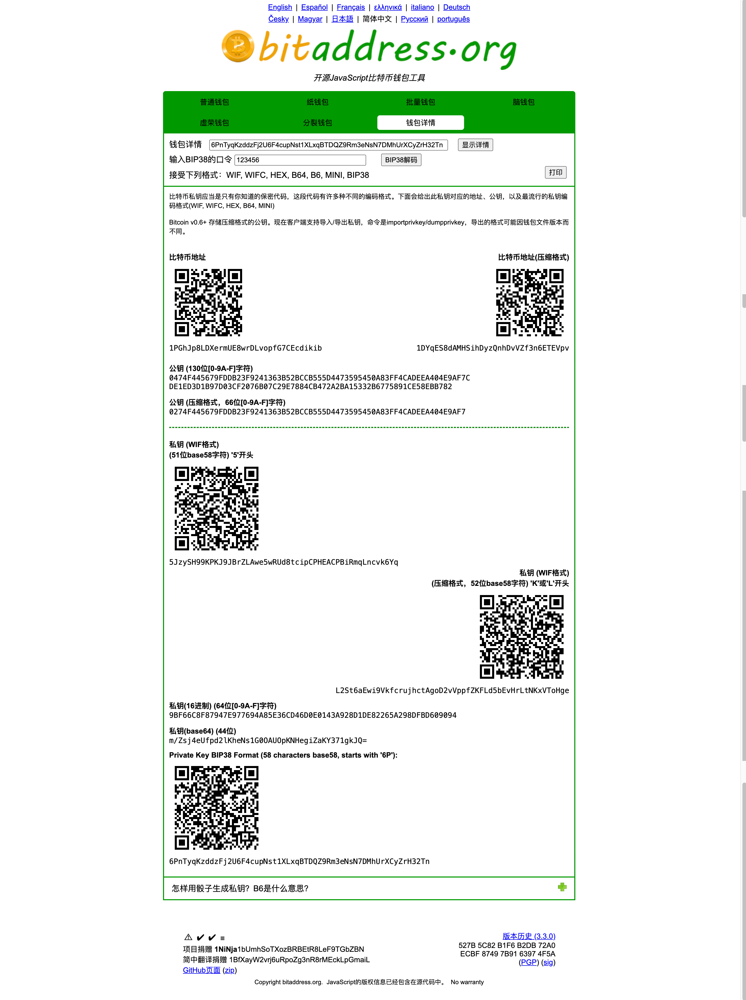
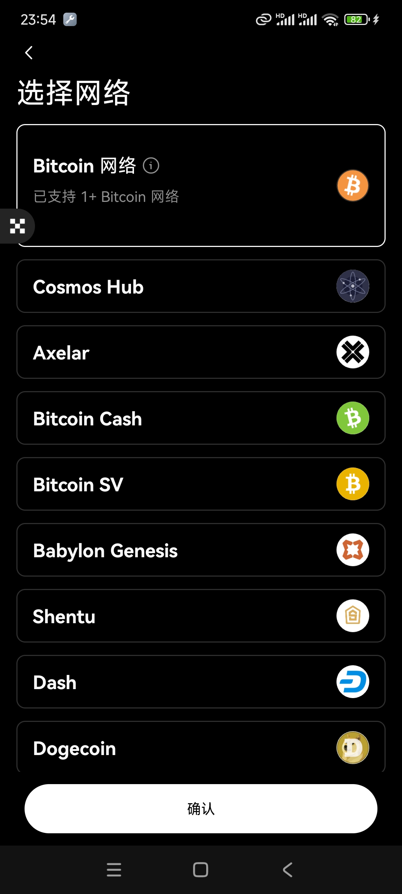
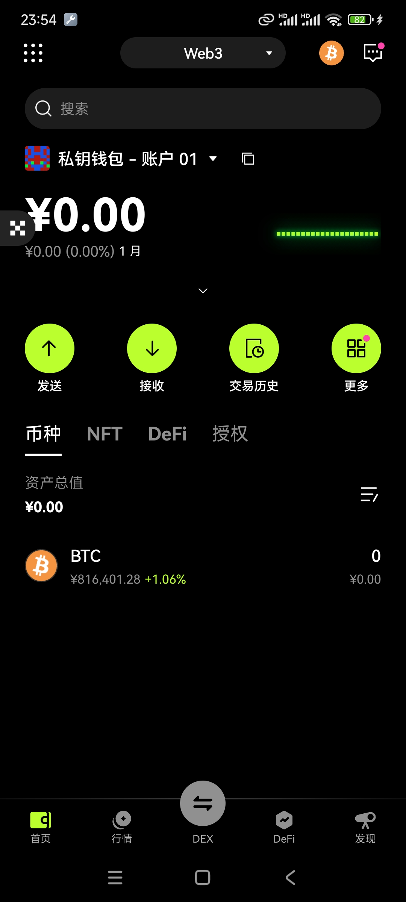
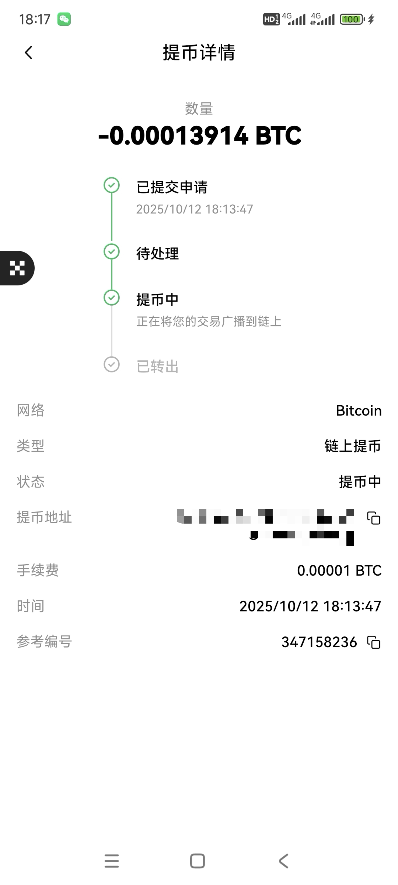
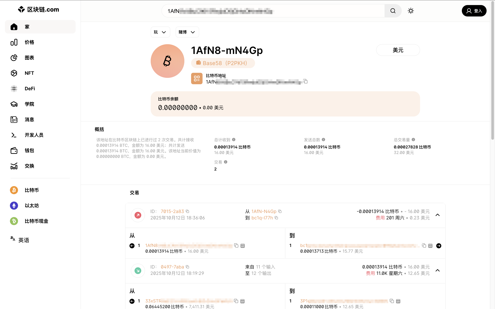

pt6 Uyama Hiroto Remix Instrumentals.jpg)
🎵 Luv(sic) pt6 (Uyama Hiroto Remix Instrumentals)
Nujabes ft. Uyama Hiroto
注：建议先看完一遍博客后再去进行实操
准备工作
- 准备一个电脑，最好是苹果电脑，恢复出厂设置，关闭所有网络
- 准备一个全新U盘
- 纸和笔（最好可以准备一个能刻录的钢板做密钥保存）
- 一台能连网的电脑
- 一个 VPN
- 交易所账户
bitaddress 比特币钱包的介绍和使用方法
第一种方法：打开 https://www.bitaddress.org/ 这个网站，不用 VPN 也可以打开。
第二种方法：在 https://github.com/pointbiz/bitaddress.org 下载源码在本地进行。

普通钱包

打开后你什么都点击不了，这个时候你不需要惊慌，你的鼠标随机移动生成随机的值，当 randomness 加载为100%时，普通的比特币钱包就此诞生。在页面的最顶部可以点击你所熟悉的语言，你点击你选择的语言时页面不会因为你的点击而刷新。

SHARE （左边二维码也可以扫描得到一样的效果）为公钥地址：1DsRQ3s7yPfHEGRKyAXBMwyAQduy5yPe6h
SECRT （右边二维码也可以扫描得到一样的效果）为私钥地址：L5Eq6n42vVzf7iaAWKaGPRB8NiGiQpHt8qDTkFmGTqowxttBds1U
公钥就是我们钱包的收货地址，当我们在交易所用法币兑换成 BTC 之后，在发送到了钱包中，使用的地址就是这个公钥地址。
私钥就是这个钱包打开的唯一钥匙，当你需要提取冷钱包中的货币到其他地方去的时候，使用私钥就可以获得钱包的管理权，可以向任何你想发的地址发送 BTC 。
纸钱包
纸钱包是目前安全性价比来说最好的一个，使用了 BIP38 加密

生成的地址数根据自己的需求来，BIP38 加密勾选上，密码自己设置一个，这个密码一定一定要记住，如果这个密码记不住，后续你要解开冷钱包即使你有密钥也解不开。然后点击右边的打印就看输出 PDF 进行保存。
纸钱包解密

这里我解释一下，首先，钱包详情那一栏输入你自己的密钥，然后输入 BIP38 口令。解析出来的密钥和原来的完全不一样，不用惊慌，解析出来的才是正常能使用的。
那么这里有疑问了，一共有三个二维码，好几个密钥，哪一个才是解开钱包的呢？
一般来说我们发送虚拟货币的冷钱包地址是压缩格式，所以我们也默认使用压缩格式的。那么这里对应的密钥就是第二个
密钥：L2St6aEwi9VkfcrujhctAgoD2vVppfZKFLd5bEvHrLtNKxVToHge
这里可以直接用密钥在 web3 钱包中直接登陆，也可以在 web3 钱包中扫描二维码登录，效果都是一样的。
选择对应的 Bitcoin 网络：

下图是登录后的效果：

现在你已经成功了大半，你已经知道了钱包是如何生成的
冷钱包制作
在 https://github.com/pointbiz/bitaddress.org 下载源码然后放入 U 盘中再拷入苹果笔记本电脑中(切记苹果笔记本电脑是恢复出厂设置的并且完全是离线状态，没有任何网络，蓝牙和隔空投送等只要是能外部通过数据连接的全部彻底断掉)。
然后打开下图中的 bitaddress.org.html ，用浏览器打开
钱包的生成看上面，完全一样。我推荐用 纸钱包
密钥用纸记住，还有准备的钢板也可以刻录。密钥一定一定要绝缘，拍照都不行，要保持与世隔绝。
然后登录交易所，用法币兑换 BTC ，最后进行提币（提币填入的地址为公钥地址），如下图：

在 https://www.blockchain.com/ 这个网站上通过自己的公钥就可以监控账户的变动。

结语
受9神的《囤比特币》 的影响，让鄙人也走上了这条囤比特币的道路，此文是我自己对这两天学习制作冷钱包和相关知识的一个总结。